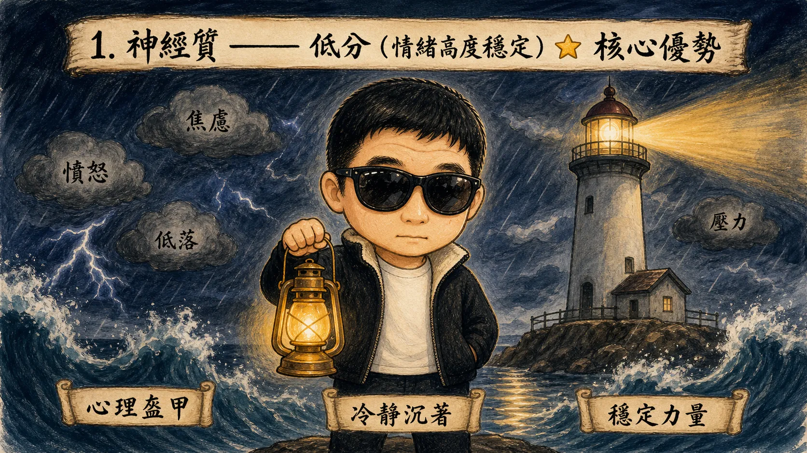
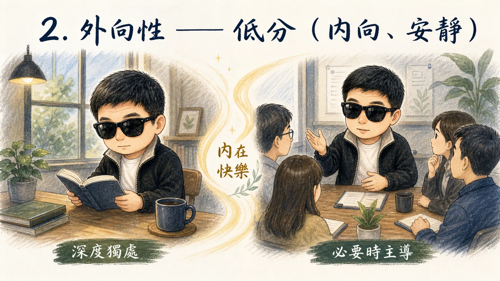
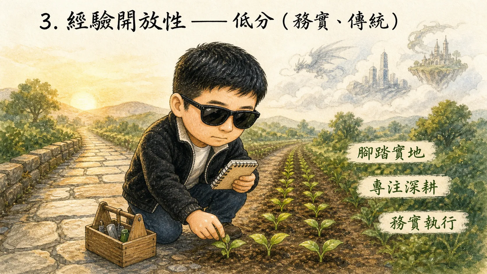
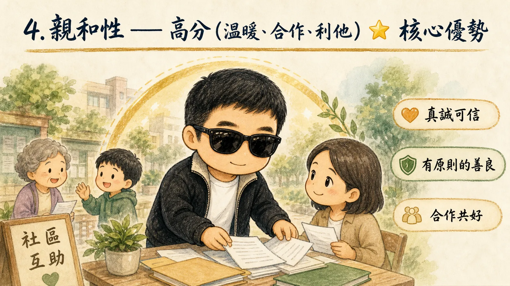
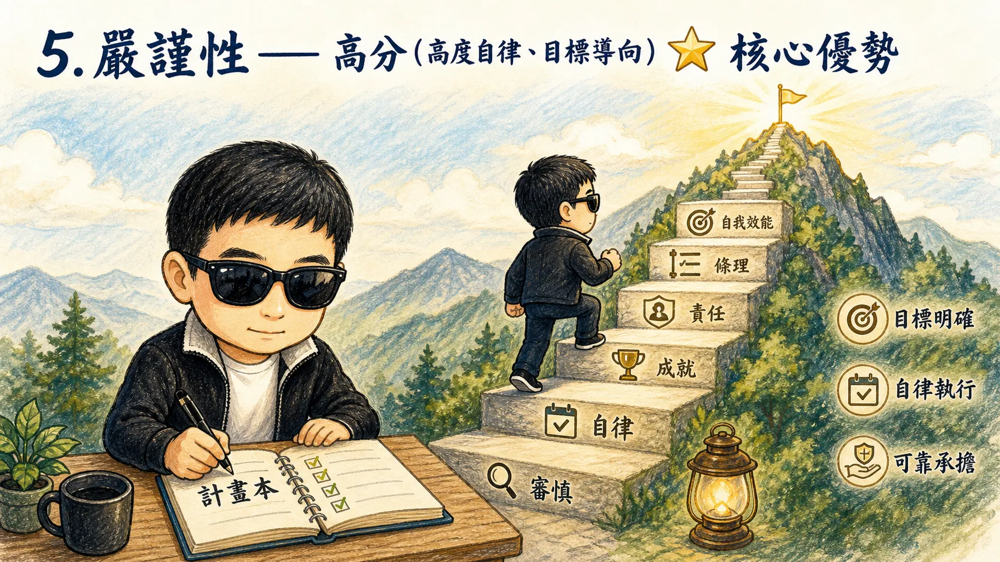
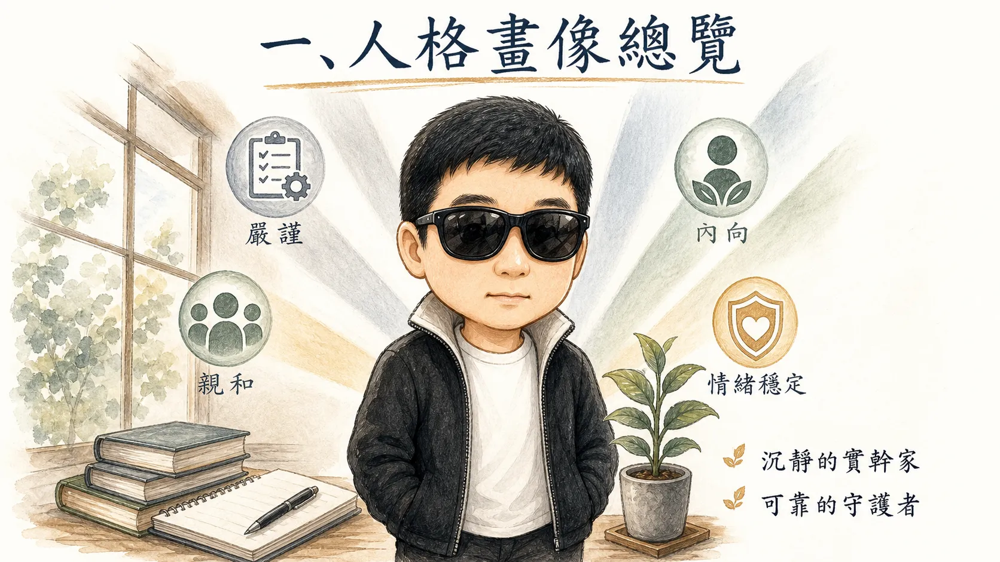
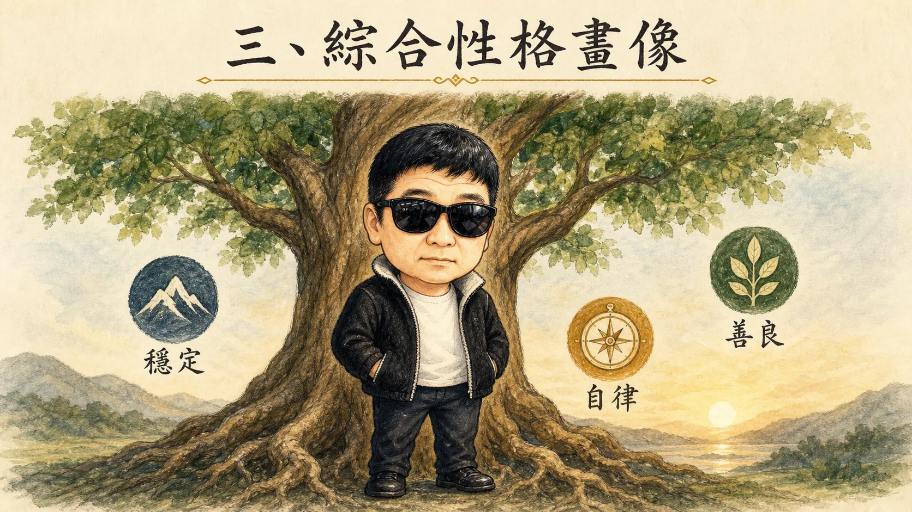
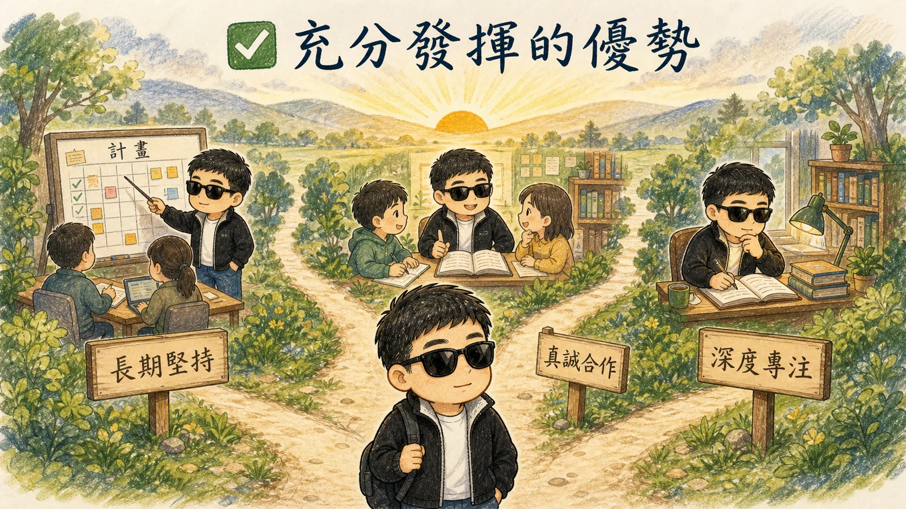
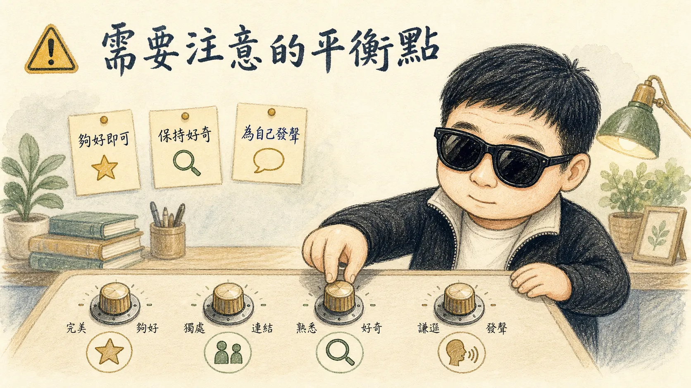

免費開源大五人格特質測試 · 結果基於五因素模型

神經質指的是經歷負面情緒的傾向。
你的神經質得分較低。

外向性以明顯的與外部世界的接觸為特徵。
外向者喜歡與人相處，充滿活力，經常經歷極的情緒。他們傾向於熱情、行動導向，並且可能會對令人興奮的機會說「是！」或「我們走吧！」。在群體中，他們喜歡交談，表現自己，並吸引別人的注意。
內向者缺乏外向者的熱情、能量和活動水平。他們傾向於安靜、低調、深思熟慮，並脫離社會世界。他們缺乏社會參與不應被解釋為害羞或抑鬱；內向者只是需要比外向者更少的刺激，並且更喜歡獨處。
你的外向性得分較低，表明你是內向、保守和安靜的。你享受孤獨和獨自活動。你的社交活動通常僅限於少數幾個親密的朋友。

經驗開放性描述了一種認知風格的維度，區分了富有想像力、創造力的人和腳踏實地、傳統的人。
你的經驗開放性得分較低，表明你喜歡以簡單明瞭的方式思考。別人形容你腳踏實地、實際且保守。

親和性反映了個體在合作和社會和諧方面的差異。親和的個體重視與他人相處融洽。
因此，他們體貼、友善、慷慨、樂於助人，並且願意與他人妥協自己的利益。親和的人也對人性持樂觀態度。他們相信人基本上是誠實、正派和值得信賴的。
不親和的人將自我利益置於與他人相處之上。他們通常不關心他人的福祉，因此不太可能為他人付出。有時他們對他人動機的懷疑使他們變得多疑、不友好和不合作。
你的親和性得分很高，這表明你對他人的需求和福祉有強烈的興趣。你令人愉快、富有同情心且合作。

嚴謹性關注的是我們如何控制、調節和指導衝動。
衝動非本質上是壞的；有時時間限制需要快速決策，按照我們的第一衝動行事可能是有效的反應。此外，在玩樂而非工作時，隨性和衝動行事可以帶來樂趣。衝動的人可能被他人視為多彩、有趣和瘋狂的。
儘管如此，衝動行事會在多方面帶來麻煩。一些衝動是反社會的。不受控制的反社會行為不僅會傷害社會的其他成員，還可能導致對這些衝動行為的施害者進行報復。衝動行為的另一個問題是，它們通常帶來即時的滿足，但會產生不良的長期後果。
在嚴謹性量表上得分高的人事實上被他人視為聰明。高嚴謹性的好處是顯而易見的。嚴謹的人通過有目的的計劃和堅持達到高水平的成功。他們也被他人積極地看作聰明和可靠。負面的是，他們可能是強迫性的完美主義者和工作狂。此外，極度嚴謹的人可能被認為是刻板和無聊的。
你的嚴謹性得分很高，這意味著你設立了明確的目標，並決心追求它們。人們認為你可靠且勤奮。
根據您的測試結果，您的人格特質呈現出高度嚴謹、高度親和、內向且情緒穩定的鮮明組合。這是一類被稱為「沉靜的實幹家」或「可靠的守護者」型人格。
您不是那種在人群中光芒四射的焦點人物，但您是有深度、有原則、值得信賴的人。您用行動而非言語證明自己，用堅持而非激情達成目標。您不追求刺激，不渴望喧鬧，但在您選擇的領域裡，您會以令人敬佩的自律和責任感做到極致。

您在負面情緒的體驗上得分較低，這意味著您擁有相當出色的情緒韌性。您不太容易被焦慮吞噬、被憤怒左右、或被悲傷拖垮。
這對您意味著：您具備一種寶貴的「心理盔甲」。在他人被壓力擊垮時，您能保持穩定；在危機來臨時，您能理性應對。這種特質讓您成為團隊中可以依靠的穩定力量。
您屬於典型的內向者，但這不等於害羞或社交焦慮。您只是對社交刺激的需求較低，更享受獨處或與小圈子深交。
關鍵洞察：您是一個「有領導力的內向者」。您不需要透過社交來獲取能量，但當需要站出來說話、掌控局面時，您完全具備這樣的能力。您的快樂源自內心而非外界的認可。
您偏好熟悉的路徑、清晰的思路和務實的方式。這並非缺乏想像力，而是您選擇將精力投入到看得見、摸得著的現實事務中。
這對您意味著：您是「務實的執行者」。別人還在空想和討論時，您已經在做了。您不追求新奇體驗，這使您能夠專注於深耕某一領域，成為真正有深度的人。
這是您人格中最溫暖的部分。您真心關心他人，願意為他人付出，是那種別人遇到困難時會第一個想到的人。
關鍵洞察：您的高親和性不是軟弱，而是一種有原則的善良。您不是那種被人利用的「老好人」，而是有清晰的道德底線，並願意為此真誠付出的人。您的謙虛與道德感讓您贏得真正的尊重而非僅僅是喜歡。
這是您人格中最突出、最具生產力的特質。您的嚴謹性得分處於非常高的水平，這讓您在生活的各個領域都能取得實實在在的成就。
這對您意味著：您擁有頂尖的執行力和自我管理能力。您設定目標、制定計畫、然後堅持不懈地執行。在他人拖延時您行動，在他人放棄時您堅持。您是最可靠的合作夥伴和最值得信賴的責任承擔者。

綜合以上分析，您的性格可以用以下關鍵詞概括：
您不是一個張揚的人，但您是一個有分量的人。您的情緒穩定性讓您成為風暴中的錨點；您的嚴謹性讓您成為目標的達成者；您的親和性讓您成為值得深交的朋友和同事。
您不需要人群中閃耀，但您在關鍵時刻從不缺席。您可能不是最快的人，但您是最穩的人；您可能不是最熱鬧的人，但您是最真誠的人。


您的人格是一幅沉靜而有力量的畫卷。您可能不是那種讓人一見難忘的類型，但您一定是那種相處越久、越讓人敬重的人。
世界需要光芒四射的激勵者，也需要像您這樣穩住根基的執行者。您以自律贏得自由，以善良贏得信任，以穩定贏得尊重。
請珍惜並善用這份獨特的人格組合。您已經在路上了，而這條路，走得比大多數人都更堅實。